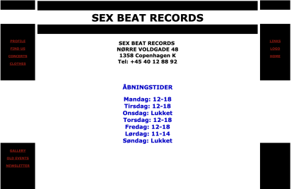
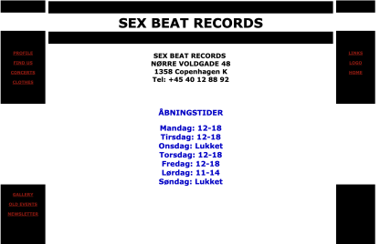

GRUNDLÆGGENDE INDHOLD
Temaet
I dette tema skulle vi arbejde i grupper. Vi skulle redesigne et website for en virksomhed. Vi skulle selv ud og finde og kontakte vores virksomhed, som en del af opgaven. Udover det, blev vi også introduceret til Photoshop, After Effects og lottiefiles. Vi skulle kode vores site i det samme doKument i VS code ved, at oprette et repository i Github.

Process
Det allerførste, min gruppe og jeg gjorde, var at udfylde en teamkontrakt. Vi fandt derefter hurtigt den virksomhed, vi ønskede at kontakte: Sex Beat Records. Det er en lille pladeforretning beliggende på Nørre Voldgade i København. Virksomheden ejes af Thomas, som har drevet butikken i mange år. Vi planlagde et interview med Thomas, og hele gruppen deltog den dag for at møde ham og høre, om han havde idéer eller ønsker i forhold til hjemmesiden.
 

Til projektstyring benyttede vi Trello til at planlægge og strukturere gruppens opgaver. De fleste morgener afholdt vi SCRUM-møder, hvor vi opdaterede hinanden på fremdriften. Da vi først havde lagt en plan, forløb projektet i samme struktur som tidligere: research, design, kodning og test. Alt dette mundede ud i det endelige redesign, som du kan finde længere nede på siden.

Læring
Det udfordrende ved dette projekt var at tilpasse og reflektere kundens ønsker og visuelle smag i et webdesign – frem for at lade egne præferencer styre processen. Interviewet med Thomas gav os værdifuld indsigt i hans forretning og stil, som dannede grundlag for vores designvalg. Derudover var det lærerigt at arbejde som en gruppe og finde hinandens styrker og svagheder undervejs. Gennem struktureret projektstyring med Trello og daglige SCRUM-møder blev samarbejdet både effektivt og udviklende.
Løsning
Projektet tog udgangspunkt i en fælles teamkontrakt og en klar arbejdsstruktur i Trello med daglige SCRUM-møder. Vi valgte Sex Beat Records som case og interviewede ejeren, Thomas, der sælger rock i den bredeste forstand. Hans ønsker og butiksmiljø dannede grundlag for designretningen. Vi gik efter et råt, rocket look, hvor farverne i redesignet afspejler stemningen i butikken, og rammerne er inspireret af hans visitkort. Prototypen blev udviklet i Figma, og vi sendte løbende udkast til Thomas – hans feedback var meget positiv, og han syntes, det var super fedt. Processen fulgte samme tilgang som i forrige projekter: research, design, kodning og test. Det var både udfordrende og lærerigt at sætte sine egne designpræferencer til side og i stedet skabe en løsning, der ramte kundens stil og behov – alt sammen gennem tæt samarbejde i gruppen.